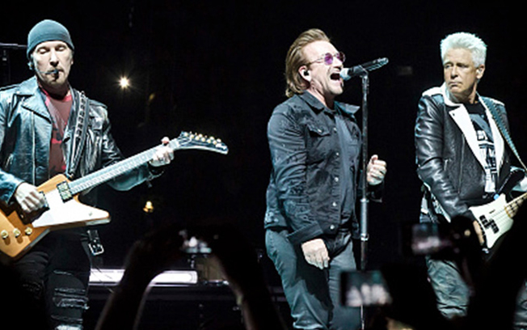
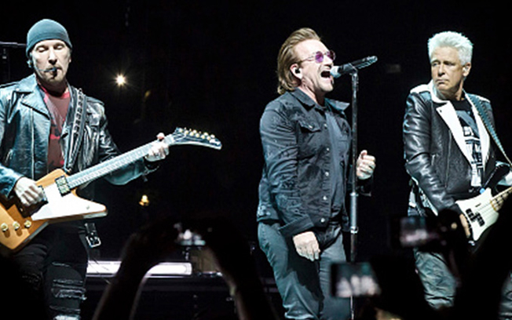

História da banda
A banda irlandesa nasceu em 1976 com os integrantes Bono Vox, The Edge, Adam Clayton e Larry Mullen, o estilo musical foi inspirado no pós-punk, mas ao longo do tempo foi desenvolvendo uma identidade própria.
o U2, após quatro anos do nascimento da banda eles conseguiram seu primeiro contrato com a gravadora Island Records e lançaram seu primeiro disco.
Em 1987 conseguiram com o álbum The Joshua Tree o reconhecimento internacional que possuem hoje no mundo do rock.
Em 1991 a banda tentou ganhar uma nova imagem lançando o álbum Achtung baby que possuia caracteristicas de um rock mais alternativo.
A banda conta com mais de 170 milhões de álbuns vendidos em sua carreira e 22 prêmios Grammy, alem de estarem no hall da fama do rock e serem considerados uma das 30 maiores bandas de rock de todos os tempos no ranking da revista Rolling Stones.
O grupo possui uma fama de ser uma banda seria e com forte ativismo politico que reflete em muitas letras de suas músicas, e em seu ultimo álbum queria provar que possuiam um lado menos sério, mudando um pouco o estilo ja conhecido de suas músicas.
Ainda hoje o U2 continua na ativa fazendo shows pelo mundo inteiro.

 
